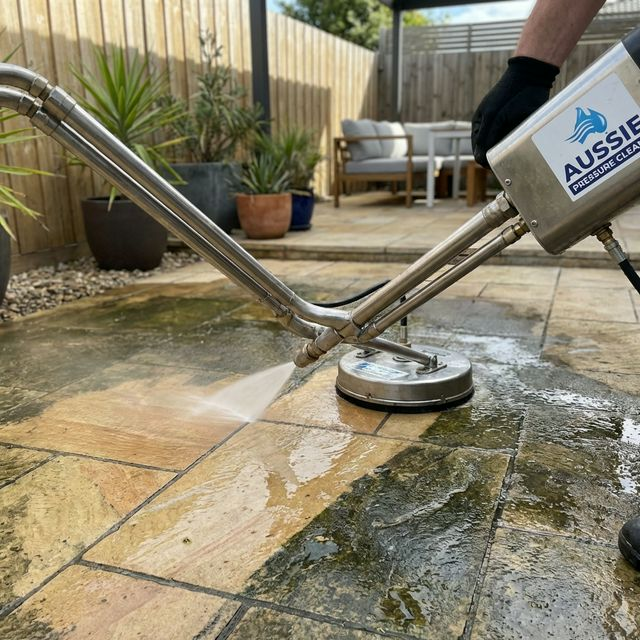
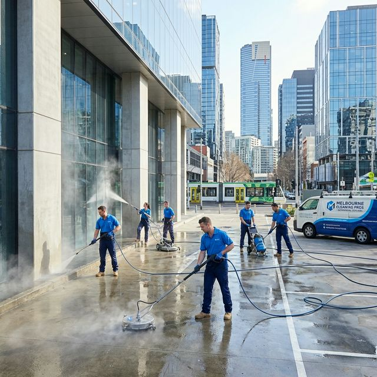

Our Professional Services for Pressure Cleaning Melbourne
Are the dirt, dust and stains on the different surfaces of your home or office making the area look unattractive? Fret not, as we at BABA Cleaning will restore the appeal. You just need to opt for our professional pressure cleaning Melbourne services, and we will send our experts to your location for an initial inspection of the surfaces.
Our pressure cleaners will assess the condition of the surface, and depending on the stains and accumulated dirt or grease will they use the necessary pressure cleaning tools. So, if your driveway, patio, deck, stairs or garage has not been cleaned or is looking unappealing, now is the time to contact us, and we assure you that the results will please you.


High-Quality Pressure Washing Services Melbourne
One of the best solutions to cleaning hard to remove stains from concrete and other surfaces is pressure cleaning, and at BABA Cleaning, we have some of the best pressure cleaning tools. Additionally, when it comes to high-quality services for high pressure cleaning Melbourne, we are second to none because our professional cleaners have in-depth knowledge of the different types of pressure cleaning tools.
Our professional cleaners operate the tools depending on the condition of the surface to achieve the best results, and while doing so, they take all the safety measures. Finally, when the pressure washing service is complete, you can expect the surfaces in your location to be free of mould, mildew, stains, dust, dirt, grease and other particles.
Why Choose Our Professional Pressure Cleaners in Melbourne?
If you are seeking reliable professional pressure cleaners Melbourne who will make the areas in your location immaculate, contacting BABA Cleaning is the best solution because:
Licensed & Insured
Our trusted pressure cleaners are licensed and insured for your peace of mind.
High-End Equipment
We use high-end pressure cleaning tools for achieving the desired results.
On-Time Completion
Our professional cleaners complete the cleaning job on time, every time.
Affordable & Reliable
Our pressure cleaning service is affordable and reliable with no hidden charges.
No Hidden Charges
We do not include hidden charges for the pressure cleaning service Melbourne.
Premium Results
Let the best cleaners make your location pristine clean with guaranteed satisfaction.
Professional Pressure Cleaning Services Melbourne
If you are looking for the best professional pressure cleaning services Melbourne, BABA Cleaning is the best name to turn to. We are home to some of the best and the most qualified trusted pressure cleaners, who have years of experience and in-depth expertise in conducting pressure washing Melbourne of different scales at various properties.
Our highly qualified expert cleaners offer customised and prompt professional services for residential and commercial pressure cleaning Melbourne that will not only meet your immediate cleaning needs but also deliver impeccable results.
Why is it important to hire the best Professional Pressure Cleaning Services?
Pressure cleaning is not anybody's job. It is a specialist's job that involves expert use of the pressure cleaners in the most efficient way, so much so that optimal cleaning results are obtained and that also without any damage to the surfaces and elsewhere.
Pressure cleaning is the quickest possible cleaning method, more so when it comes to cleaning age old oil and grease, grime and moss and other unwanted stuff from expansive surfaces. With only water being used, pressure cleaning is the safest cleaning option.
Where Do We Offer Our Professional Pressure Cleaning Services Melbourne?
We have the expertise of conducting professional pressure cleaning services across a wide range of properties and locations.
With such an all-round experience of professional pressure cleaning services in Melbourne, we are your one-stop solution.
Hire Expert Pressure Cleaners Melbourne Today
If you require professional pressure cleaners, BABA Cleaning is the company that will meet your needs. We have licensed professional pressure cleaners to make the different areas of your property clean. So, if you want to book a service or learn more about our high-pressure cleaning price list, get in touch with us today.